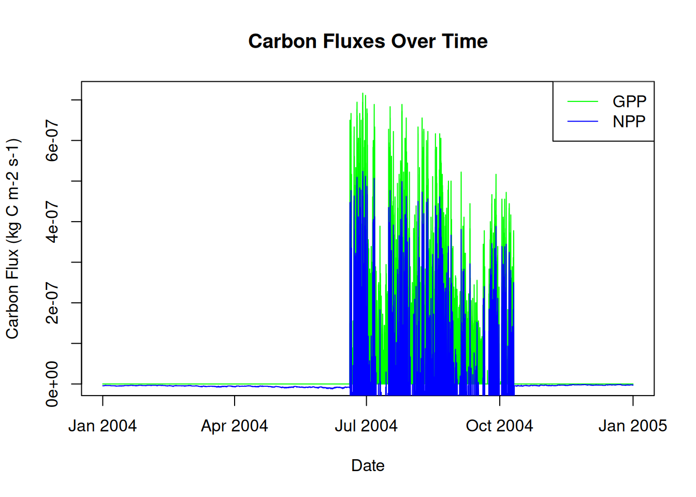
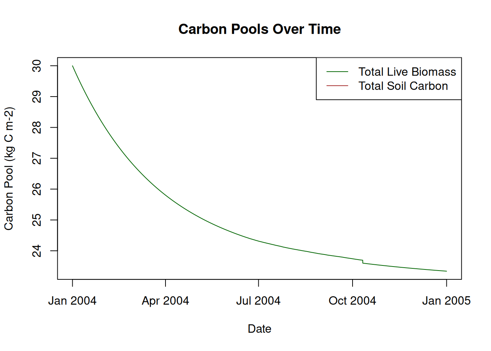
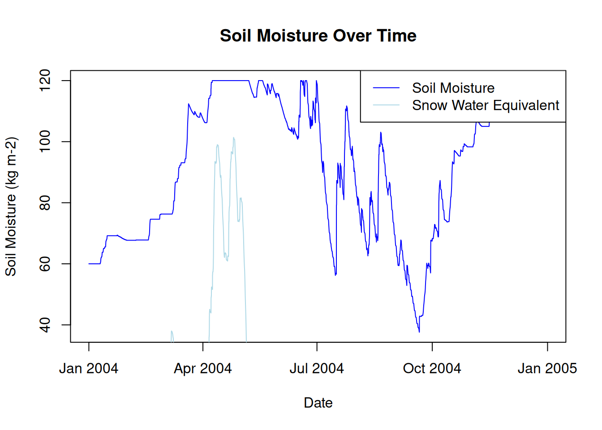
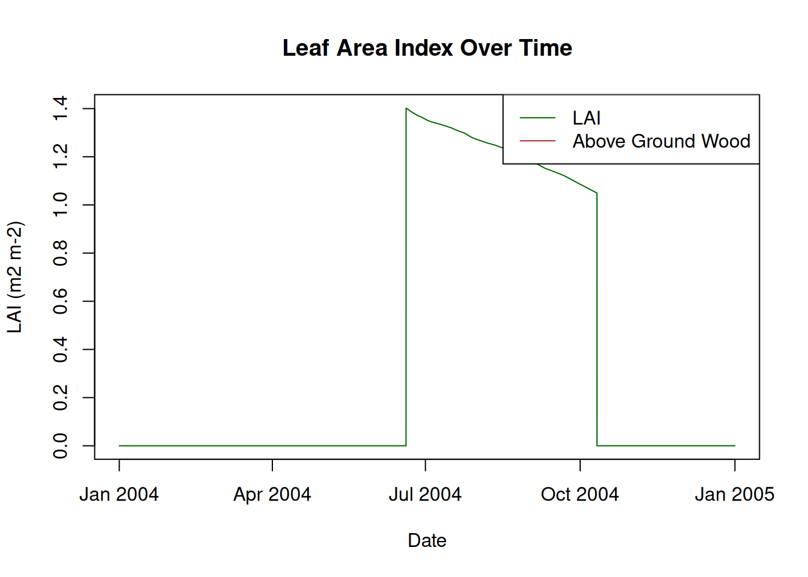

Welcome to this PEcAn workflow notebook! This notebook will guide you through running an ecosystem model using PEcAn’s programmatic interface.
What Is PEcAn?
PEcAn (Predictive Ecosystem Analyzer) is a scientific workflow system designed to make ecosystem modeling more transparent, repeatable, and accessible. It helps researchers:
Run ecosystem models with standardized inputs and outputs
Perform uncertainty analysis on model parameters
Compare model predictions with observations
Share and reproduce scientific workflows
What This Notebook Does
This notebook demonstrates how to:
Set up and configure a PEcAn workflow
Run an ecosystem model simulation
Analyze and visualize the results
The Scenario Being Modeled:
We are modeling carbon and productivity dynamics at the Niwot Ridge Forest AmeriFlux site (US-NR1, a high-elevation temperate coniferous forest in Colorado. The model configuration uses the SIPNET process-based ecosystem model, parameterized with a temperate coniferous plant functional type (PFT).
The simulation is run for the full year 2004 (January 1 – December 31) using AmeriFlux LBL meteorological drivers from the Niwot Ridge site. The ensemble setup specifies one model run focusing on net primary productivity (NPP) as the target output variable.
This scenario is designed to be a minimal, reproducible example to demonstrate how to run SIPNET within the PEcAn workflow. In later steps, this same framework can be extended to include more ensemble members, additional PFTs, longer time periods, or alternative meteorological inputs.
This run is based on a study by Moore et. al. (2007) that uses SIPNET to understand the relationship between water and carbon balance at this site.
Prerequisites
Before running this notebook, make sure you have:
All the PEcAn packages installed. You can install all PEcAn packages and their dependencies by running the following command in the root of your PEcAn repository:
# Enable repository from pecanproject
options(repos = c(
pecanproject = 'https://pecanproject.r-universe.dev',
CRAN = 'https://cloud.r-project.org'))
# Download and install PEcAn.all in R
install.packages('PEcAn.all')
A valid pecan.xml configuration file or use the example provided: pecan/documentation/tutorials/Demo_1_Basic_Run/pecan.xml
How to Use This Notebook
Each section is clearly marked with a heading
Code chunks are provided with explanations
You can run the code chunks sequentially
Once you have successfully run the demo, you can modify parameters to configure new runs and analyses
Objective:
This demo illustrates how to run a basic PEcAn workflow using an R-based Quarto notebook. It will cover loading settings, writing model configuration files, and running model simulations. This approach provides a programmatic alternative to the web-based PEcAn interface for executing ecosystem models.
Session Info
This section prints your R session information for reproducibility. Having this information at the beginning helps with debugging even if the notebook encounters errors later.
PEcAn.all::pecan_version()
package v1.9.0 installed source
PEcAn.all 1.9.0 1.9.0.9000 local (/pecan/bas...
PEcAn.allometry 1.7.4 1.7.4.9000 local (/pecan/mod...
PEcAn.assim.batch 1.9.0 1.9.0.9000 local (/pecan/mod...
PEcAn.BASGRA 1.8.1 1.8.1.9000 local (/pecan/mod...
PEcAn.benchmark 1.7.4 1.7.4.9000 local (/pecan/mod...
PEcAn.BIOCRO 1.7.4 1.7.5 local (/pecan/mod...
PEcAn.CABLE 1.7.4 NA NA
PEcAn.CLM45 1.7.4 1.7.4.9000 local (/pecan/mod...
PEcAn.DALEC 1.7.4 1.7.5 local (/pecan/mod...
PEcAn.data.atmosphere 1.9.0 1.9.1 local (/pecan/mod...
PEcAn.data.land 1.8.1 1.8.2 local (/pecan/mod...
PEcAn.data.mining 1.7.4 NA NA
PEcAn.data.remote 1.9.0 1.9.1 local (/pecan/mod...
PEcAn.DB 1.8.1 1.8.1.9000 local (/pecan/bas...
PEcAn.dvmdostem 1.7.4 1.7.5 local (/pecan/mod...
PEcAn.ED2 1.8.1 1.8.2 local (/pecan/mod...
PEcAn.emulator 1.8.1 1.8.1.9000 local (/pecan/mod...
PEcAn.FATES 1.8.0 1.8.1 local (/pecan/mod...
PEcAn.GDAY 1.7.4 1.7.5 local (/pecan/mod...
PEcAn.JULES 1.7.4 1.7.5 local (/pecan/mod...
PEcAn.LDNDC 1.0.1 1.0.2 local (/pecan/mod...
PEcAn.LINKAGES 1.7.4 1.7.5 local (/pecan/mod...
PEcAn.logger 1.8.3 1.8.4 local (/pecan/bas...
PEcAn.LPJGUESS 1.8.0 1.8.1 local (/pecan/mod...
PEcAn.MA 1.7.4 1.7.4.9000 local (/pecan/mod...
PEcAn.MAAT 1.7.4 1.7.5 local (/pecan/mod...
PEcAn.MAESPA 1.7.4 1.7.5 local (/pecan/mod...
PEcAn.ModelName 1.8.1 1.8.1.9000 local (/pecan/mod...
PEcAn.photosynthesis 1.7.4 1.7.4.9000 local (/pecan/mod...
PEcAn.PRELES 1.7.4 NA NA
PEcAn.priors 1.7.4 1.7.4.9000 local (/pecan/mod...
PEcAn.qaqc 1.7.4 1.7.4.9000 local (/pecan/bas...
PEcAn.remote 1.9.0 1.9.0.9000 local (/pecan/bas...
PEcAn.settings 1.9.0 1.9.1 local (/pecan/bas...
PEcAn.SIBCASA 0.0.2 0.0.3 local (/pecan/mod...
PEcAn.SIPNET 1.9.0 1.9.1 local (/pecan/mod...
PEcAn.STICS 1.8.1 1.8.2 local (/pecan/mod...
PEcAn.uncertainty 1.8.1 1.8.2 local (/pecan/mod...
PEcAn.utils 1.8.1 1.8.2 local (/pecan/bas...
PEcAn.visualization 1.8.1 1.8.1.9000 local (/pecan/bas...
PEcAn.workflow 1.9.0 1.9.0.9000 local (/pecan/bas...
PEcAnAssimSequential 1.9.0 1.9.0.9000 local (/pecan/mod...
PEcAnRTM 1.7.4 1.9.0.9000 local (/pecan/mod...
Install SIPNET v1.3.0
If you haven’t already installed the SIPNET binary, you can do so by running the following code. This will download the SIPNET binary to demo_outdir/sipnet and make it executable.
Note: The demo_outdir directory will be created in the root of your PEcAn installation (i.e., at pecan/demo_outdir/). This directory will contain the SIPNET binary as well as the output generated by PEcAn in this demo.
# Download and install SIPNET v1.3.0source( here::here("documentation/tutorials/Demo_1_Basic_Run/download_sipnet.R" ))
Note: You can find the most recent version of the SIPNET binary at: SIPNET GitHub Releases, but this notebook is designed to work with SIPNET v1.3.0.
Load PEcAn Packages
First, we need to load the PEcAn R packages. These packages provide all the functions we’ll use to run the workflow.
# Load the PEcAn.all package, which includes all necessary PEcAn functionalitylibrary("PEcAn.all")
Loading required package: PEcAn.DB
Loading required package: PEcAn.settings
Loading required package: PEcAn.MA
Loading required package: PEcAn.logger
Loading required package: PEcAn.utils
Loading required package: PEcAn.uncertainty
Loading required package: PEcAn.data.atmosphere
Loading required package: PEcAn.data.land
Loading required package: PEcAn.data.remote
Loading required package: PEcAn.assim.batch
Loading required package: PEcAn.emulator
Loading required package: PEcAn.priors
Loading required package: PEcAn.benchmark
Loading required package: PEcAn.remote
Loading required package: PEcAn.workflow
Load PEcAn Settings File
PEcAn uses an XML-based settings file (pecan.xml) to configure model runs. This file defines key information about the run including: PFT(s), site location, time period of the run, the location of input files and where outputs will be saved. Other settings outside the scope of this demo include the types of analyses that will be performed, how to connect to a database, and how to run it on a high performance computing cluster (we are using the default single model run on a single computer).
You can read more about the settings file in the “PEcAn XML” chapter of the documentation.
There is an example pecan.xml that has been configured for this demonstration. You can find it at pecan/documentation/tutorials/Demo_1_Basic_Run/pecan.xml.
After specifying the path to the pecan.xml file, the next step involves reading and preparing these settings. PEcAn provides utilities to process and validate the configurations before execution begins.
PEcAn.settings::read.settings(settings_path): Reads the pecan.xml file and converts it to an R list object.
PEcAn.settings::prepare.settings(settings): Prepares and validates settings. It sets defaults for missing fields, changes file paths to absolute paths, and generally ensures consistency.
# Read the settings from the pecan.xml filesettings <- PEcAn.settings::read.settings(settings_path)# Prepare and validate the settingssettings <- PEcAn.settings::prepare.settings(settings)
Explore the Settings Object
Once the settings have been read and prepared, it is useful to inspect the structure of the settings object. This object is an R list containing all parameters and configurations for the PEcAn workflow.
str(settings) displays the internal structure of the settings object. This shows how the settings are represented in R and is useful for debugging and verifying settings.
str(settings)
List of 12
$ info :List of 4
..$ notes : NULL
..$ userid : chr "-1"
..$ username: NULL
..$ date : chr "2025-06-19-15-34-01"
$ outdir : chr "/work/documentation/tutorials/Demo_1_Basic_Run/demo_outdir"
$ pfts :List of 1
..$ pft:List of 3
.. ..$ name : chr "temperate.coniferous"
.. ..$ posterior.files: chr "pft/temperate.coniferous/prior.distns.Rdata"
.. ..$ outdir : chr "pft/temperate.coniferous"
$ ensemble :List of 5
..$ variable : chr "NPP"
..$ size : num 1
..$ start.year : num 2004
..$ end.year : num 2004
..$ samplingspace:List of 2
.. ..$ parameters:List of 1
.. .. ..$ method: chr "uniform"
.. ..$ met :List of 1
.. .. ..$ method: chr "sampling"
$ model :List of 5
..$ type : chr "SIPNET"
..$ revision : chr "git"
..$ delete.raw: chr "FALSE"
..$ binary : chr "demo_outdir/sipnet"
..$ id : num -1
$ run :List of 4
..$ site :List of 6
.. ..$ met.start: chr "2004/01/01"
.. ..$ met.end : chr "2004/12/31"
.. ..$ name : chr "Niwot Ridge Forest/LTER NWT1 (US-NR1)"
.. ..$ lat : chr "40.0329"
.. ..$ lon : chr "-105.546"
.. ..$ id : num -1
..$ inputs :List of 1
.. ..$ met:List of 4
.. .. ..$ source : chr "AmerifluxLBL"
.. .. ..$ output : chr "SIPNET"
.. .. ..$ username: chr "Aritra_2004"
.. .. ..$ path :List of 1
.. .. .. ..$ path1: chr "dbfiles/AMF_US-NR1_BASE_HH_23-5.2004-01-01.2004-12-31.clim"
..$ start.date: chr "2004/01/01"
..$ end.date : chr "2004/12/31"
$ host :List of 3
..$ name : chr "localhost"
..$ rundir: chr "/work/documentation/tutorials/Demo_1_Basic_Run/demo_outdir/run"
..$ outdir: chr "/work/documentation/tutorials/Demo_1_Basic_Run/demo_outdir/out"
$ settings.info:List of 3
..$ deprecated.settings.fixed: logi TRUE
..$ settings.updated : logi TRUE
..$ checked : logi TRUE
$ database :List of 1
..$ dbfiles: chr "/root/.pecan/dbfiles"
$ workflow :List of 1
..$ id: chr "2025-12-04-17-15-45"
$ rundir : chr "/work/documentation/tutorials/Demo_1_Basic_Run/demo_outdir/run"
$ modeloutdir : chr "/work/documentation/tutorials/Demo_1_Basic_Run/demo_outdir/out"
- attr(*, "class")= chr [1:3] "Settings" "SafeList" "list"
Your turn: explore the settings object further using the following commands: * names(settings) to list the top-level keys in the settings object * Once you know the names, you can look at each component in detail, for example: * settings$run to access the run-specific settings, such as start and end dates, model type, and output directory * settings$pfts to explore the Plant Functional Types settings
Now you can update each of these settings. Here is a simple example:
settings$info <-list(author ="Aritra Dey",date =Sys.Date(),description ="Demo run of PEcAn using SIPNET")
Editing the more interesting settings to change the PFT (settings$pfts) or extend the run (settings$run$end.date) is beyond the scope of this demo. You could change the pft or the end date, but you would need a new file containing parameters for that PFT (settings$pfts$pft$posterior.files), or a climate file (settings$run$met$path$path1) that extends to the desired simulation period.
The directory structure created by PEcAn for this demo run will look like this:
demo_outdir/ # Root output directory
├── run/ # Configuration & execution metadata
│ ├── runs.txt # List of run IDs (one per model realization)
│ ├── <runid>/ # Model-specific config copies (sometimes)
│ └── config.* # Generated model configs (e.g., SIPNET)
├── out/ # Raw model outputs by run ID
│ └── <runid>/ # E.g., daily or sub-daily SIPNET output files
The root output directory is defined here as demo_outdir/ by settings$outdir. This directory contains log and record files from the PEcAn workflow. They provide a detailed record of how data was generated and are key components of the analysis metadata and provenance. These can be useful for debugging as well as for downstream analysis.
Key subdirectories include run/ and out/ that contain files used to configure and run the model, files generated by the underlying ecosystem model, and PEcAn standard outputs used in downstream analyses. These are described in subsequent sections.
Additional outputs include logs, a STATUS file that records the steps of the workflow along with timestamps and whether each step was successful, and a copy of the pecan.*.xml file.
Write Model Configuration Files
This step generates the model-specific configuration files and scripts that will be used to run the ecosystem model. The process involves:
Disabling database write operations because we are not using a database
Generating SIPNET configuration files using the runModule.run.write.configs() function.
settings$database <-NULL# Disable database operations for this demosettings <- PEcAn.workflow::runModule.run.write.configs(settings)
Error in postgresqlNewConnection(drv, ...) :
RPosgreSQL error: could not connect root@/var/run/postgresql:5432 on dbname "root": connection to server on socket "/var/run/postgresql/.s.PGSQL.5432" failed: No such file or directory
Is the server running locally and accepting connections on that socket?
Loading required package: PEcAn.SIPNET
Run Model Simulations and Fetch Results
This section executes the actual model simulations and retrieves the results. The process is managed by PEcAn’s workflow system, which handles the execution of your chosen ecosystem model.
runModule_start_model_runs(settings): This function initiates the model runs based on your configuration. It manages the execution of your chosen ecosystem model, using the configuration files generated in the previous step.
This step generates raw model outputs in model-specific format (in this case, sipnet.out) as well as log files.
Extract Model Results and Prepare for Analysis
After the model simulation completes, we need to extract the results and prepare them for analysis. This involves:
Reading the run ID
Setting up output paths
Defining time period
Loading model output
Convert to a standard format
runid <-as.character(read.table(paste(settings$outdir, "/run/", "runs.txt", sep =""))[1, 1]) # Note: if you are using an xml from a run with multiple ensembles this line will provide only the first run idoutdir <-file.path(settings$outdir, "/out/", runid)start.year <- lubridate::year(settings$run$start.date)end.year <- lubridate::year(settings$run$end.date)model_output <- PEcAn.utils::read.output( runid, outdir, start.year, end.year,variables =NULL,dataframe =TRUE,verbose =FALSE)available_vars <-names(model_output)[!names(model_output) %in%c("posix", "time_bounds")]
Running this code will convert model specific output files into a standardized netCDF ([year].nc) that can be downloaded for visualization and analysis (R, Matlab, ncview, panoply, etc). This is a key step, because this standardization enables PEcAn to apply downstream analyses to outputs from different ecosystem models.
Display Available Model Variables
This section shows all the variables that are available in the model output. These variables represent different ecosystem processes and states that the model has simulated.
Model Output Variables and Descriptions
Variable
Description
GPP
Gross Primary Productivity
NEE
Net Ecosystem Exchange
TotalResp
Total Respiration
AutoResp
Autotrophic Respiration
HeteroResp
Heterotrophic Respiration
SoilResp
Soil Respiration
NPP
Net Primary Productivity
GWBI
Gross Woody Biomass Increment
TotLivBiom
Total living biomass
AGB
Total aboveground biomass
LAI
Leaf Area Index
leaf_carbon_content
Leaf Carbon Content
fine_root_carbon_content
Fine Root Carbon Content
coarse_root_carbon_content
Coarse Root Carbon Content
AbvGrndWood
Above ground woody biomass
TotSoilCarb
Total Soil Carbon
litter_carbon_content
Litter Carbon Content
Qle
Latent heat
Transp
Total transpiration
SoilMoist
Average Layer Soil Moisture
SoilMoistFrac
Average Layer Fraction of Saturation
SWE
Snow Water Equivalent
litter_mass_content_of_water
Average layer litter moisture
year
Year
Visualize Model Results
This section provides examples of how to create time series plots of different model variables. The examples cover various ecosystem processes including carbon fluxes, carbon pools, water variables, and structural variables like Leaf Area Index (LAI).
Plot Carbon Fluxes
# Plot Gross Primary Productivity (GPP) and Net Primary Productivity (NPP)plot(model_output$posix, model_output$GPP,type ="l",col ="green",xlab ="Date",ylab ="Carbon Flux (kg C m-2 s-1)",main ="Carbon Fluxes Over Time")lines(model_output$posix, model_output$NPP, col ="blue")legend("topright", legend =c("GPP", "NPP"), col =c("green", "blue"), lty =1)

Plot Carbon Pools
# Plot Total Live Biomass and Total Soil Carbonplot(model_output$posix, model_output$TotLivBiom,type ="l",col ="darkgreen",xlab ="Date",ylab ="Carbon Pool (kg C m-2)",main ="Carbon Pools Over Time")lines(model_output$posix, model_output$TotSoilCarb, col ="brown")legend("topright", legend =c("Total Live Biomass", "Total Soil Carbon"), col =c("darkgreen", "brown"), lty =1)

Plot Water Variables
# Plot Soil Moisture and Snow Water Equivalentplot(model_output$posix, model_output$SoilMoist,type ="l",col ="blue",xlab ="Date",ylab ="Soil Moisture (kg m-2)",main ="Soil Moisture Over Time")lines(model_output$posix, model_output$SWE, col ="lightblue")legend("topright", legend =c("Soil Moisture", "Snow Water Equivalent"), col =c("blue", "lightblue"), lty =1)

Plot LAI and Biomass
# Plot Leaf Area Index (LAI) and Above Ground Woodplot(model_output$posix, model_output$LAI,type ="l",col ="darkgreen",xlab ="Date",ylab ="LAI (m2 m-2)",main ="Leaf Area Index Over Time")lines(model_output$posix, model_output$AbvGrndWood, col ="brown")legend("topright", legend =c("LAI", "Above Ground Wood"), col =c("darkgreen", "brown"), lty =1)

Conclusion
This notebook demonstrated how to set up, run, and analyze a PEcAn ecosystem model workflow programmatically. You can now modify parameters, try different models, or extend the analysis as needed.
Try editing the pecan.xml file. Give it a new name and update the settings_path variable at the beginning of this Demo to point to the new file. See how the changes affect the model output!
Clean Up Workflow Output (Optional)
If you want to remove all files and directories created by this workflow and start fresh, you can run the following code. This will delete the entire output directory specified in your settings. Use with caution!
# WARNING: This will permanently delete all workflow output files!# Uncomment the line below to enable cleanup.# fs::dir_delete(settings$outdir)
Session Info
This section prints your R session information for reproducibility.